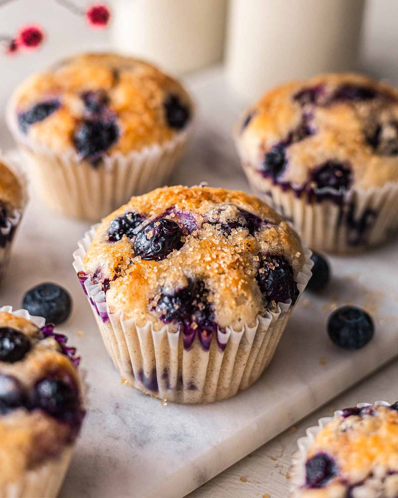

Home
Blueberry Muffins

Description
These homemade blueberry muffins are soft, fluffy, and filled with juicy blueberries in every bite.
They have a light, tender texture with a golden top, making them perfect for breakfast or an afternoon snack.
This easy recipe uses simple ingredients and comes together quickly, creating delicious muffins that
are sweet, moist, and full of fresh blueberry flavor.
Ingredients
- 2 cups all-purpose flour
- 1 cup granulated sugar
- 2 teaspoons baking powder
- ½ teaspoon salt
- 2 large eggs
- ½ cup unsalted butter, melted
- ½ cup milk
- 1 teaspoon vanilla extract
- 1½ cups fresh or frozen blueberries
Instructions
- Preheat the oven to 375°F (190°C) and line a muffin tin with paper liners.
- In a large bowl, whisk together the flour, sugar, baking powder, and salt.
- In another bowl, beat the eggs, then mix in the melted butter, milk, and vanilla extract.
- Pour the wet ingredients into the dry ingredients and stir until just combined.
- Gently fold in the blueberries without overmixing the batter.
- Divide the batter evenly among the prepared muffin cups, filling each about three-quarters full.
- Bake for 20–25 minutes, or until the tops are golden and a toothpick inserted into the center comes out clean.
- Allow the muffins to cool in the pan for 5 minutes before transferring them to a wire rack to cool completely.